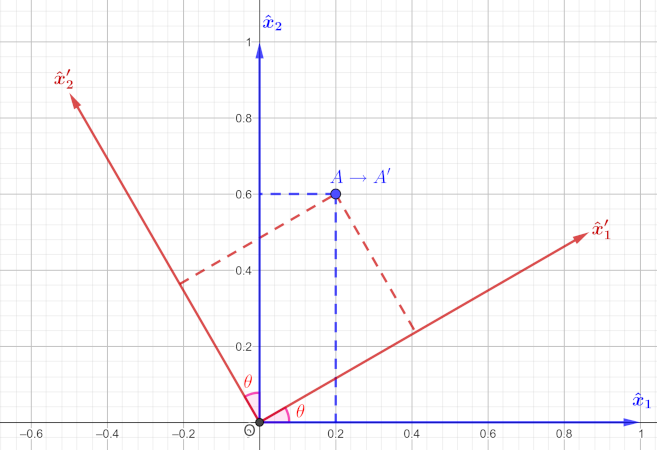
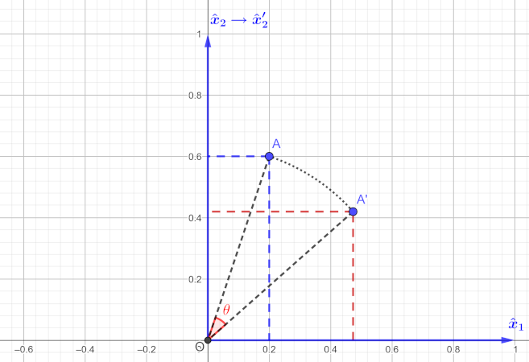

Stress - Strain Tensors & Elasticity
Contents
Stress - Strain Tensors & Elasticity¶
Dr. Emre S. Tasci, emre.tasci@hacettepe.edu.tr
Dept. Eng. Physics
Hacettepe University
Ankara / Turkey
July 2024
import numpy as np
import sympy as smp
from scipy.optimize import fsolve
Passive transformation¶
In the passive transformation, the point(s) stay fixed while the coordinate system rotates counterclockwise by an angle \(\theta\):

The relation between the old and new basis vectors are defined through the transformation matrix \(P_\theta\):
as
and the inverse transformation that relates the old basis to the new ones is of course given as:
theta = np.deg2rad(30)
cos = np.cos(theta)
sin = np.sin(theta)
P = np.array([[cos,sin],[-sin,cos]])
P
array([[ 0.8660254, 0.5 ],
[-0.5 , 0.8660254]])
(x1,x2,x1p,x2p) = smp.symbols(["\hat{x}_{1}",
"\hat{x}_{2}",
"\hat{x}_{1}'",
"\hat{x}_{2}'"])
x = smp.Array([[x1],[x2]])
xp = smp.Array([[x1p],[x2p]])
theta = smp.symbols(r"\theta")
theta
P = smp.Array([[smp.cos(theta),smp.sin(theta)],
[-smp.sin(theta),smp.cos(theta)]])
Pi = smp.Array([[smp.cos(theta),-smp.sin(theta)],
[smp.sin(theta),smp.cos(theta)]])
P
Consider a point A, defined as:
From the above transformation, we see that:
Substitution of the new basis in place of the old ones, we have:
Ap = smp.Array([[3*smp.cos(theta)+4*smp.sin(theta)],
[-3*smp.sin(theta)+4*smp.cos(theta)]])
Ap
Ap_subs = Ap.subs(theta,np.pi/6)
Ap_subs
Ap_np = np.array(Ap_subs).astype(float)
Ap_np
array([[4.59807621],
[1.96410162]])
or, in other words:
Active Transformation¶

We could have perceived the same action by rotating the point in question in the opposite direction towards the coordinate axis. In our example, this is equivalent to rotating the point 30o in the clockwise direction instead of rotating the coordinate system 30o along the counter-clockwise direction.
Since the rotation operator \(R_\theta\) is defined as:
and our rotation direction is along the clockwise, i.e., the negative direction, we’ll have:
As \(\cos(\theta)\) and \(\sin(\theta)\) are even and odd functions, respectively.
R = np.array([[cos,sin],[-sin,cos]])
np.dot(R,np.array([[3],[4]]))
array([[4.59807621],
[1.96410162]])
Tensor Analysis¶
Tensors transform according to a very strict formula. In our case, we are dealing with vectors (i.e., tensors of 1st rank) and they transform via the following equation:
here, Einstein notation is followed and \(a_{ij}\) is the cosine of the angle between the new base \(\hat x_i'\) and the old one \(\hat x_j\) (as usual, counter-clockwise being the positive direction and clockwise being the negative direction).
Considering our transformation:
let’s calculate the new basis in terms of the old ones. Writing the above equation in full form:
From the graph, we see that:
Warning
Check that, the angle is always calculated starting from the new basis and going towards the old one - that’s why, when we’re moving in clockwise direction, the angle is taken to be negative.
It is also obvious but still worth to mention: in general \(a_{ij}\ne a_{ji}\).
Also, a transformation doesn’t necessarily need to correspond to a simple rotation of the basis like the one we are considering. We could have two different angles between the corresponding new and old basis.
Substitution of the \(a\) values into the equation above, we find:
or in other “words”:
as expected.
The transformation matrix¶
As we have seen, the transformation matrix \(P\) composes of the cosines relating the new axes to the old ones:
Vectors and tensors transform in accordance with the following transformation formulas:
[Nye1985 I.2 “Transformations”]
Here, the Einstein summation notation has been used, so, for example, \(\vec v'\) and \(T_{12}'\) are calculated as:
Principal stresses & axes¶
Case¶
Calculate the principal stresses and their directions for the given stress tensor \(\sigma\):
Solution¶
Normally this is pretty straightforward as the eigenvalues yield the principal stresses and the eigenvectors their direction, so:
sigma = np.zeros((3,3),float)
sigma[0,1] = -7
sigma[0,2] = 3
sigma[1,2] = -4
sigma += sigma.T
sigma += np.diag([5,9,-6])
sigma
array([[ 5., -7., 3.],
[-7., 9., -4.],
[ 3., -4., -6.]])
[l,u] = np.linalg.eig(sigma)
l,u
(array([15.44582956, -0.28008452, -7.16574504]),
array([[ 0.58630892, -0.79872908, -0.1351803 ],
[-0.77761665, -0.601688 , 0.18243874],
[ 0.22705549, 0.00184701, 0.97388007]]))
Thus, the principal stresses \((\sigma_i)\) and their corresponding axes’ directions \((\vec a_i)\) (wrt the “original” basis) are:
Caution
Notice that even though the eigenvectors are the columns of the u matrix, for the principal axes’ directions we are reading by the rows. This is due the fact that \(\sigma = u.\sigma'.u^{-1}\) whereas we are interested in the transformation that transforms \(\sigma\) to \(\sigma'\), which is given by the reciprocal equation: \(\sigma' = u^{-1}.\sigma.u\). As \(u\) is an orthogonal matrix, its inverse is just its transpose.
\(\sigma'\) is the diagonalized form of \(\sigma\), meaning that, when the axes are oriented as such, there is only pure stress along those directions.
sigma_p = np.diag(l)
sigma_p
array([[15.44582956, 0. , 0. ],
[ 0. , -0.28008452, 0. ],
[ 0. , 0. , -7.16574504]])
So, basically, we have thus transformed our stress tensor into the diagonalized form via:
or in other words:
(As \(u\) is an orthogonal matrix, its inverse is equal to its transpose.)
Tensor transformation¶
As the \(\sigma\) tensor transforms according to:
and from the relations above, we see that \(a = u^{-1} = u^T\).
We can confirm this:
sigma_p = np.zeros_like(sigma)
a = u.T
for i in range(3):
for j in range(3):
for k in range(3):
for m in range(3):
sigma_p[i,j] += a[i,k]*a[j,m]*sigma[k,m]
print(sigma_p)
print()
# Setting the "almost-zero" values (due to numerical calculations)
# i.e., the off-diagonal elements, to zero, for clarity:
sigma_p[np.isclose(sigma_p,np.zeros((3,3)))] = 0
print(sigma_p)
[[ 1.54458296e+01 -9.90527105e-16 8.88178420e-16]
[-3.81639165e-17 -2.80084518e-01 1.57859836e-16]
[ 8.88178420e-16 1.50920942e-16 -7.16574504e+00]]
[[15.44582956 0. 0. ]
[ 0. -0.28008452 0. ]
[ 0. 0. -7.16574504]]
We could have obtained our diagonalized stress tensor via the \(\sigma' = u^{-1}.\sigma.u\) transformation equation as well:
sigma_p2 = np.linalg.multi_dot((u.T,sigma,u))
print(sigma_p2)
print()
sigma_p2[np.isclose(sigma_p2,np.zeros((3,3)))] = 0
print(sigma_p2)
[[ 1.54458296e+01 -1.15440341e-15 6.88418459e-16]
[-5.45688951e-16 -2.80084518e-01 9.21363052e-17]
[ 3.36731558e-16 6.34175583e-17 -7.16574504e+00]]
[[15.44582956 0. 0. ]
[ 0. -0.28008452 0. ]
[ 0. 0. -7.16574504]]
Further analysis¶
\(\sigma\) being the stress tensor, the following invariants (as the name suggests, duh!) must be the same in any coordinate system:
and the principal stresses can be found as the roots of the characteristic equation:
def CalcInvariants(sigma):
I1 = np.trace(sigma)
I2 = sigma[0,0]*sigma[1,1]\
+ sigma[0,0]*sigma[2,2]\
+ sigma[1,1]*sigma[2,2]\
- sigma[0,1]**2\
- sigma[1,2]**2\
- sigma[0,2]**2
# Alternative calculation of I2
# through the Einstein summation
#I2_p1 = I2_p2 = 0
#for i in range(3):
# for j in range(3):
# I2_p1 += sigma[i,i]*sigma[j,j]
# I2_p2 += sigma[i,j]**2
#I2 = 0.5*(I2_p1 - I2_p2)
I3 = np.linalg.det(sigma)
return np.round((I1,I2,I3),3)
Invariants from our original \(\sigma\):
CalcInvariants(sigma)
array([ 8., -113., 31.])
Invariants from our diagonalized \(\sigma'\):
CalcInvariants(sigma_p)
array([ 8., -113., 31.])
Finding the roots of the characteristic equation once again yields the principal stresses.
(I1,I2,I3) = CalcInvariants(sigma)
np.roots([1,-I1,I2,-I3])
array([15.44582956, -7.16574504, -0.28008452])
For the principal axes’ directions -if we ever forgot that they are derived from the eigenvectors of the \(\sigma\)- we can use the following equations (not surprisingly) derived from:
This translates to:
and from here we can derive the first two following equations (with the third from derived from the normalization condition):
Implemented code follows (we’re using fsolve to solve the non-linear equations set):
def eqns(p,S_i):
(u_i1,u_i2,u_i3) = p
eqn1 = (sigma[0,0]-S_i)*u_i1 + sigma[0,1]*u_i2 + sigma[0,2]*u_i3
eqn2 = sigma[0,1]*u_i1 + (sigma[1,1]-S_i)*u_i2 + sigma[1,2]*u_i3
eqn3 = u_i1**2 + u_i2**2 + u_i3**2 - 1
#eqn4 = sigma[0,2]*u_i1 + sigma[1,2]*u_i2 + (sigma[2,2] - S_i)*u_i3
return (eqn1,eqn2,eqn3)
# we already have the principle stresses
# (either from the eigenvalues or
# from the roots of the characteristics equation)
print("Principle Stresses:")
print(l)
print("-="*20)
print("Principle Axes (read in columns):")
for SS_i in l:
psol = fsolve(eqns,(1,2,3),args=SS_i)
print(psol)
Principle Stresses:
[15.44582956 -0.28008452 -7.16574504]
-=-=-=-=-=-=-=-=-=-=-=-=-=-=-=-=-=-=-=-=
Principle Axes (read in columns):
[-0.58630892 0.77761665 -0.22705549]
[ 0.79872908 0.601688 -0.00184701]
[-0.1351803 0.18243874 0.97388007]
Note
In the above output, the \(u_i\) are presented in rows, hence, by printing them line after line, the \(a_i\) directions present themselves in columns ;)
References¶
Lagace2008: Paul A. Lagace, “Stress and Strain Transformations”, Materials and Structures Course (2.4) MIT OCW link
Nye1985: Nye, John Frederick. Physical properties of crystals: their representation by tensors and matrices. Oxford university press, 1985.
Roylance2001: David Roylance, “Transformation of Stresses and Strains”, Mechanics of Materials Course (3.11) MIT OCW link